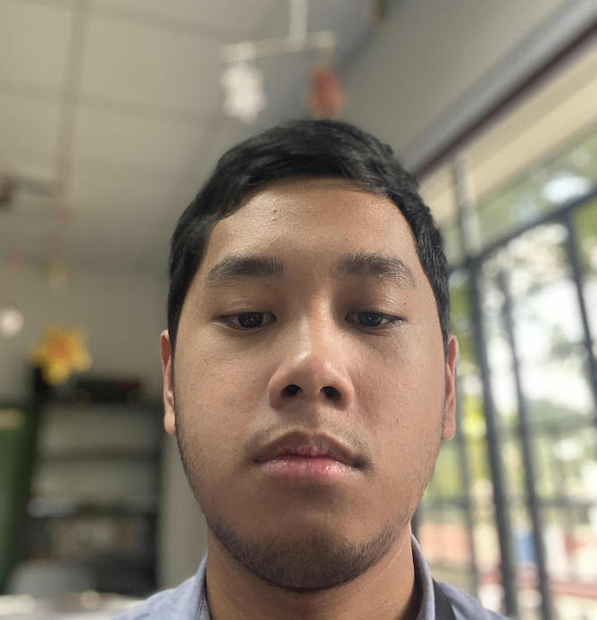

Moira.
Mamamo.
Mandanas.
COVID-19 Frontliner.
2002-2020.
Moira Mamamo Mandanas was a hardworking doctor who saved thousands of people from the COVID-19 pandemic.

A Portrait of MMM.
Timeline of MMM's Life
- 2002 - Born in Manila
- 2004 - First Words (Tite)
- 2010 - Got Interested in Doctors
- 2012 - Won Multiple Science Competitions
- 2014 - Skipped High School
- 2015 - Attended College at UST LEAPMED
- 2018 - Became a Doctor
- 2020 - Saved Thousands of COVID-19 Patients